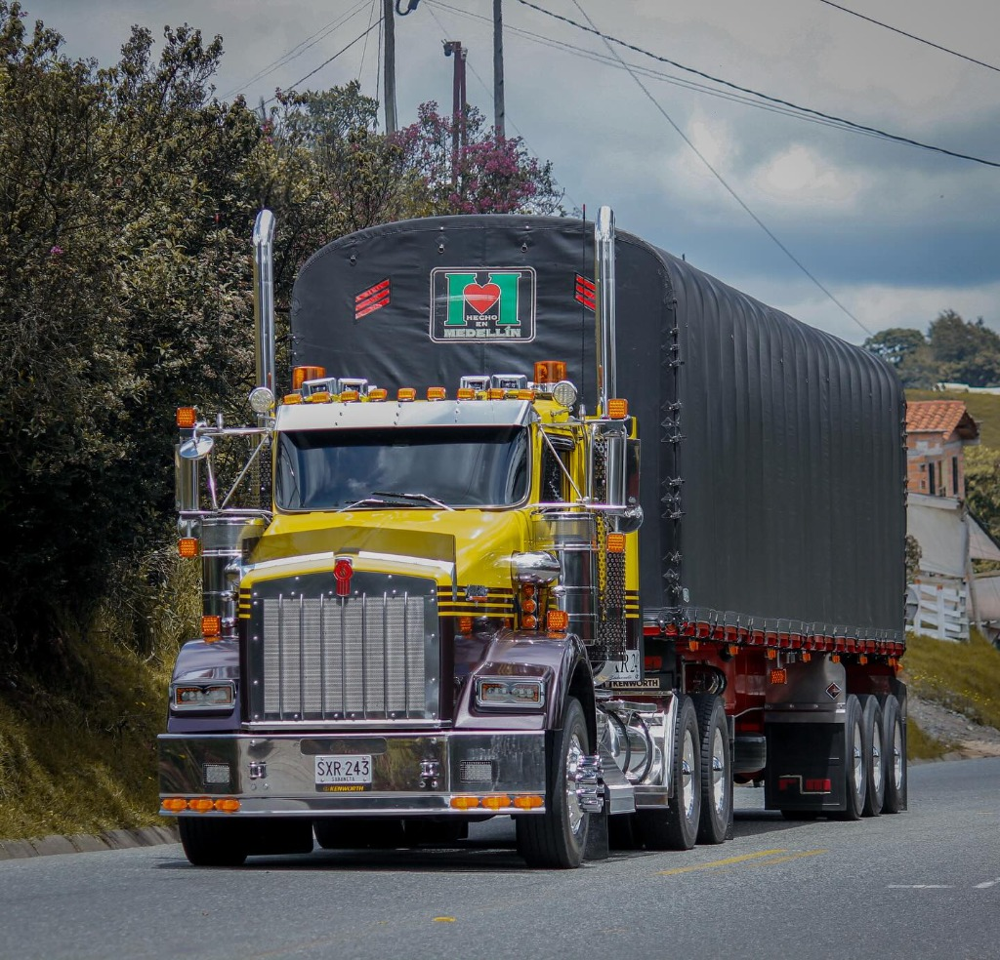

Catálogo Oficial
Los Gigantes de la Carretera
Explora los 4 tractocamiones más icónicos que cruzan los Andes y conectan los puertos de Colombia. Filtra por marca, estilo o busca por modelo.
Puesto de Mando & Simulación
Por Dentro: El Clúster de Instrumentos
Siéntate al volante de un tractocamión de 52 toneladas. Enciende el motor, acelera para presurizar el turbo y siente el poder de los frenos de compresión en vivo.
Asientos Neumáticos
Suspensión de aire independiente con amortiguación adaptable a las irregularidades del pavimento y soporte lumbar doble.
Dormitorio Modular
Literas de hasta 86 pulgadas con aislamiento térmico para los páramos fríos y climatización auxiliar independiente.
Consola Envolvente
Distribución en herradura orientada al conductor con acceso inmediato a la válvula de freno de parqueo y radio CB de carretera.
Aislamiento Acústico
Cabinas selladas herméticamente para reducir el ruido exterior a menos de 68 dB en velocidad de crucero.
Evolución & Leyenda
Historia de los Grandes Camiones
Un recorrido cronológico por los hitos que transformaron el transporte pesado y la conquista de las carreteras colombianas.
-
1923
Fundación de Kenworth Motor Truck Company
Nace en Seattle la marca que definiría el estándar de chasis pesado y durabilidad para el transporte americano.
-
1950s
Llegada de las Primeras Tractomulas a Colombia
Los primeros camiones pesados comienzan a desafiar las trochas de herradura y los pasos de cordillera en el país.
-
1961
Nace el Legendario Kenworth W900
Se presenta el ícono del diseño convencional con trompa larga, convirtiéndose en el símbolo indiscutible del camionero clásico.
-
1986
Lanzamiento del Kenworth T800
Kenworth revoluciona el mercado con el capó inclinado a 45 grados, creando la máquina más maniobrable y resistente para montañas.
-
1990s
El International Eagle 9400i Conquista las Rutas
Navistar establece un nuevo estándar de confort con su cabina Pro-Sleeper y tablero de nogal, dominando el transporte de larga distancia en Colombia.
-
2000s
Era Electrónica: Cummins ISX & Freno Jake Brake
La inyección electrónica Common Rail y los frenos de descompresión por motor transforman la seguridad en los descensos de cordillera.
-
2013
Revolución Aerodinámica con el Kenworth T680
Diseño en túnel de viento para reducir la resistencia al avance, logrando hasta un 10% de ahorro de combustible e integrando pantallas digitales.
-
Presente
Telemetría Inteligente & Motores Euro VI
Los tractocamiones modernos combinan transmisiones automatizadas predictivas por GPS, sensores anticolisión y máxima reducción de emisiones sin sacrificar torque.
Topografía & Desafíos Viales
Rutas de Carga en Colombia
Los pasos de montaña más respetados por los transportadores colombianos: altitudes de más de 3,200 msnm, pendientes pronunciadas y curvas en horquilla.
Videos en Carretera & Potencia Real
Tractocamiones en Acción
Mira a los gigantes del transporte de carga pesada recorriendo las cordilleras más desafiantes de Colombia: subidas extremas, curvas en horquilla y toda la potencia de las tractomulas colombianas.

🟡 Kenworth T800 — El Rey de la Montaña
▶ Abrir Video en YouTube ↗Recorrido real por las cordilleras colombianas con capó inclinado a 45°, motor Cummins X15 de 600 HP y caja Fuller de 18 velocidades.
Análisis Cara a Cara
Compara los Gigantes
Selecciona dos tractocamiones y contrasta de manera técnica sus motores, capacidades de carga, radio de giro y aplicaciones en el territorio nacional.
| Especificación | Camión A | Camión B |
|---|
📋 Análisis Técnico de Aplicación:
Selecciona dos modelos para ver el veredicto de carretera.
Destreza & Conducción en Carretera
Desafío de la Línea
Conduce tu tractocamión por las curvas de la cordillera colombiana: esquiva el tráfico, recoge combustible y fletes, y usa el freno Jake Brake para no quemar las zapatas en el descenso.